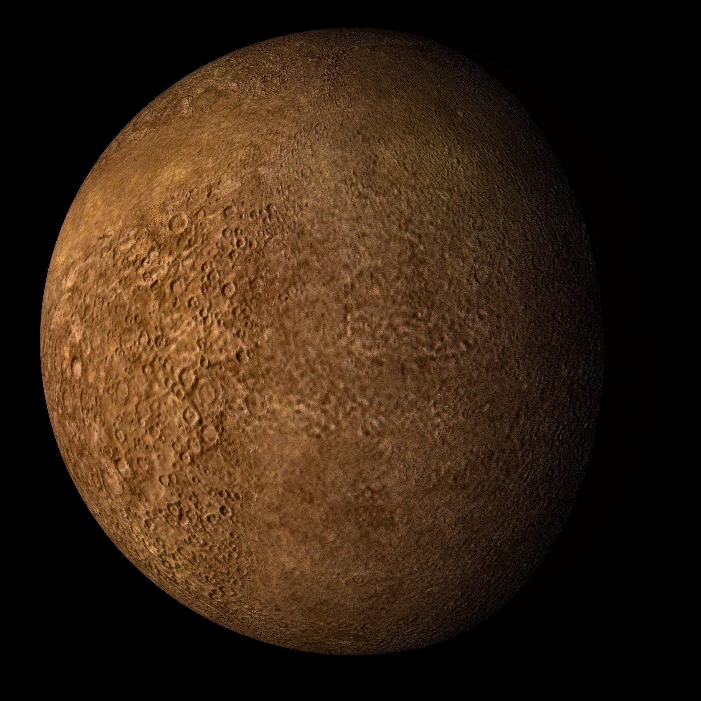
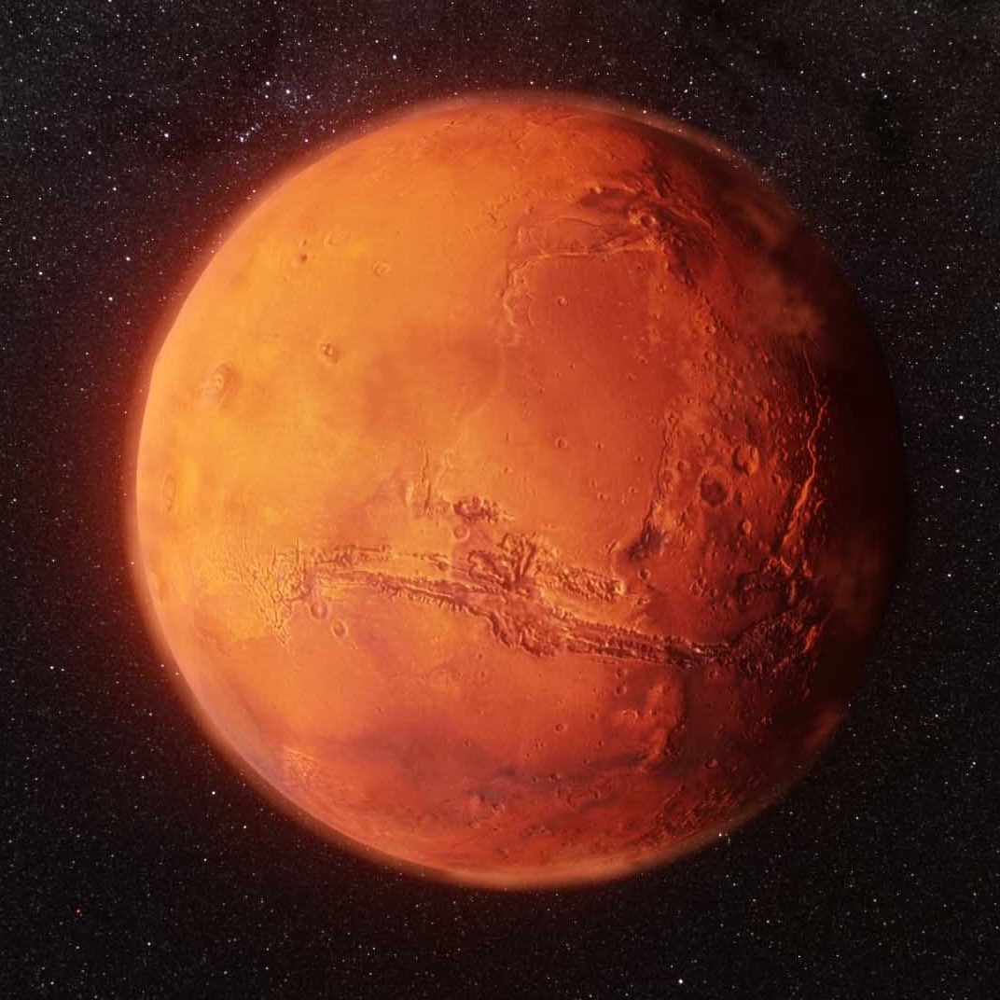
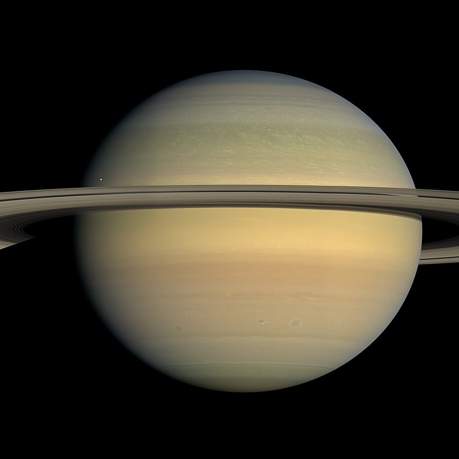
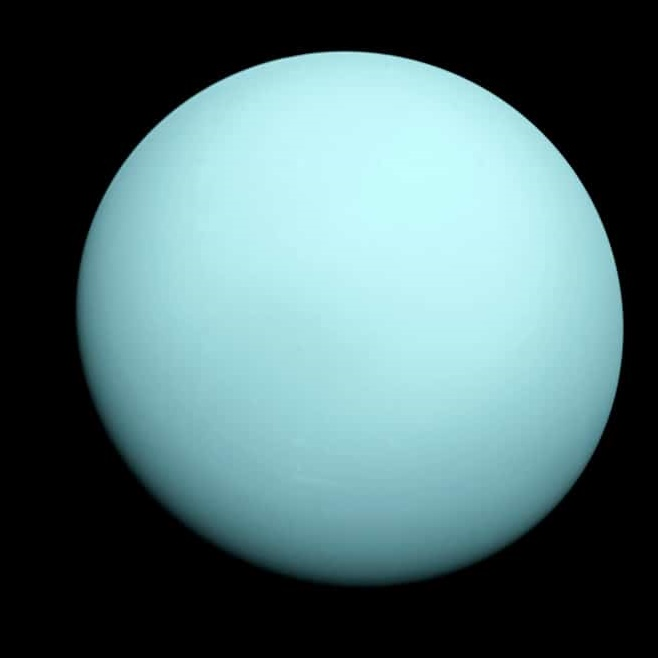
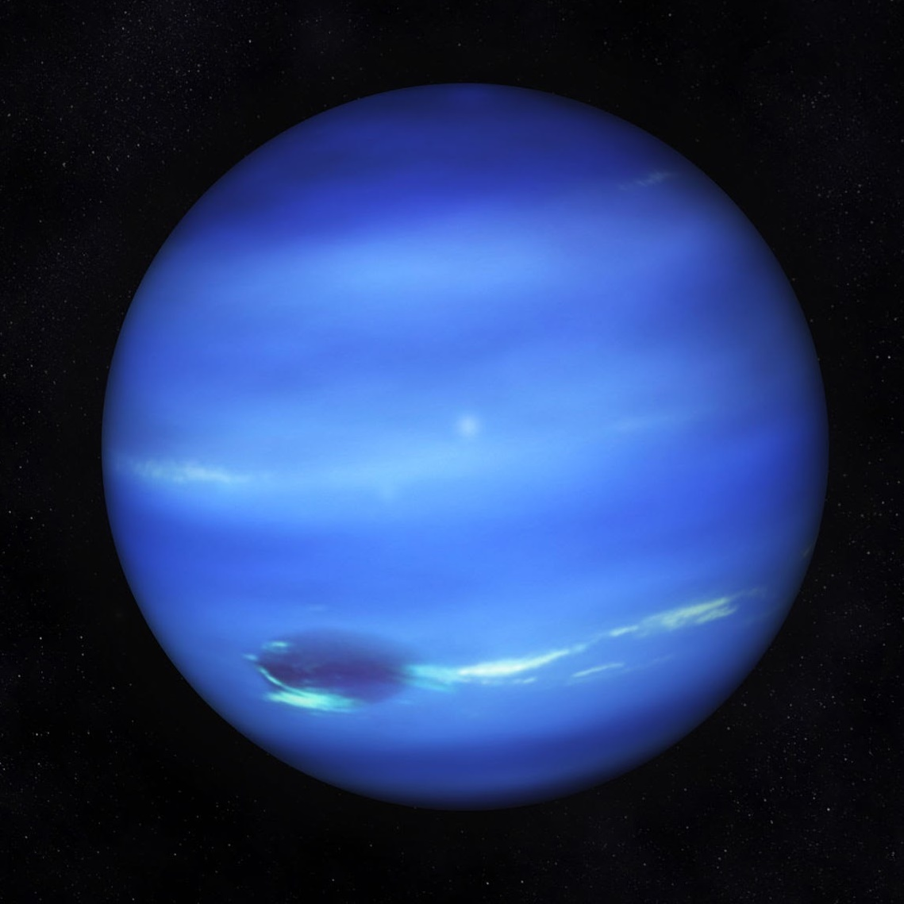

Mercúrio
"Graças às duas sondas espaciais que visitaram Mercúrio nas últimas décadas (Mariner, nos anos 1970, e Messenger, em 2011), muito já se sabe sobre Mercúrio, mas ainda há muito o que se explicar e várias perguntas sem respostas, muitas com suposições e estimativas. Tal mistério é perfeitamente aceitável, haja vista a dificuldade de acessar o planeta, que conta com instabilidades climáticas, baixas e altas temperaturas e uma órbita peculiar. A órbita de Mercúrio, por exemplo, é uma das menos circulares do Sistema Solar. Durante o periélio, o planeta chega a uma distância do Sol de 47 milhões de quilômetros. Já no afélio, essa distância atinge 70 milhões de quilômetros."Mars Atmosphere and Volatile Evolution Missile – MAVEN, Mars Orbiter Mission e ExoMars Trace Gas Orbiter — e duas na superfície — Mars Science Laboratory Curiosity, Perseverance[6] e o rover chinês Zhurong,[7] como também o lander InSight. Entre as espaçonaves desativadas que estão na superfície marciana estão a sonda Spirit e várias outras sondas e rovers, como a Phoenix, que completou sua missão em 2008, e o Opportunity.[8]
Vênus

"Vênus é um planeta que compõe o sistema solar. Está situado no sistema solar no segundo lugar entre os planetas a partir do sol. O nome do planeta em questão é proveniente da deusa romana Vênus. O planeta Vênus possui grande semelhança com a Terra, ambos são do tipo terrestre, além disso, são semelhantes quanto ao tamanho, massa e composição. Vênus é o planeta de maior proximidade com a Terra, está distante entre 40,2 milhões de quilômetros e 260 milhões de quilômetros, essa variação é oriunda da órbita que os respectivos realizam em torno do sol. O estudo acerca de Vênus teve início quando a primeira sonda espacial, chamada de mariner 2, em 1962, atingiu a superfície do planeta, logo mais foram enviadas outras sondas, o fluxo aumentou, até por que configurava o período da corrida espacial, então foram enviadas as sondas soviéticas de nome Vênus e as americanas Mariner e Pioneer. No ano de 1982 outras sondas pousaram na superfície e detectaram basalto de cobre nas camadas do planeta. Vênus é um dos astros mais reluzentes, superado pela Lua, a luz refletida é popularmente denominada de “estrela Dalva”. No decorrer de muito tempo imaginava-se que Terra e Vênus eram planetas gêmeos, embora as particularidades comuns se restrinjam somente aos aspectos referentes ao tamanho e massa, pois em condições favoráveis de formação e proliferação de vidas são totalmente distintos. Outra diferença entre Terra e Vênus é a atmosfera, pois a atmosfera do segundo é 92 vezes mais densa que a da Terra. Isso por que a atmosfera é constituída em grande parte de gás carbônico, ocasionando um profundo efeito estufa que coloca o planeta como o mais quente entre todos os outros. Uma curiosidade particular de Vênus é em relação aos movimentos de rotação e translação, em que um dia nesse planeta é maior que um ano.
Terra
.jpg)
As curiosidades sobre o planeta Terra dizem respeito ao terceiro planeta mais próximo do Sol. Além disso, é o mais denso e o quinto maior dos oito planetas no Sistema Solar. Nesse sentido, ainda recebe o nome de Mundo ou Planeta Azul por designação popular no imaginário dos seres humanos. Desse modo, a Terra é o único corpo celeste que há conhecimento de vida inteligente, apesar de sua formação há 4,56 bilhões de anos. No entanto, sabe-se hoje que a vida surgiu na superfície do planeta um bilhão de anos depois de sua origem. Por outro lado, recebe a categoria de um planeta telúrico e possui uma estrutura interna dividida em crosta, manto e núcleo.Mars Atmosphere and Volatile Evolution Missile – MAVEN, Mars Orbiter Mission e ExoMars Trace Gas Orbiter — e duas na superfície — Mars Science Laboratory Curiosity, Perseverance[6] e o rover chinês Zhurong,[7] como também o lander InSight. Entre as espaçonaves desativadas que estão na superfície marciana estão a sonda Spirit e várias outras sondas e rovers, como a Phoenix, que completou sua missão em 2008, e o Opportunity.[8]
Marte
Marte é o quarto planeta a partir do Sol, o segundo menor do Sistema Solar, atrás apenas de Mercúrio. Batizado em homenagem a divindade romana da guerra, muitas vezes é descrito como o "Planeta Vermelho", porque o óxido de ferro predominante em sua superfície lhe dá uma aparência avermelhada.[1] Marte é um planeta rochoso com uma atmosfera fina, com características de superfície que lembram tanto as crateras de impacto da Lua quanto vulcões, vales, desertos e calotas polares da Terra. O período de rotação e os ciclos sazonais de Marte são também semelhantes aos da Terra, assim como é a inclinação que produz as suas estações do ano. Marte é o lar do Monte Olimpo, a segunda montanha mais alta conhecida no Sistema Solar (a mais alta em um planeta), e do Valles Marineris, um desfiladeiro gigantesco. A suave Bacia Polar Norte, no hemisfério norte marciano, cobre cerca de 40% do planeta e pode ser uma enorme marca de impacto.[2][3] Marte tem duas luas conhecidas, Fobos e Deimos, que são pequenas e de forma irregular. Estas luas podem ser asteroides capturados,[4][5] semelhante ao 5261 Eureka, um asteroide troiano marciano. Marte está sendo explorado por oito espaçonaves atualmente: seis em órbita — Mars Odyssey, Mars Express, Mars Reconnaissance Orbiter, Mars Atmosphere and Volatile Evolution Missile – MAVEN, Mars Orbiter Mission e ExoMars Trace Gas Orbiter — e duas na superfície — Mars Science Laboratory Curiosity, Perseverance[6] e o rover chinês Zhurong,[7] como também o lander InSight. Entre as espaçonaves desativadas que estão na superfície marciana estão a sonda Spirit e várias outras sondas e rovers, como a Phoenix, que completou sua missão em 2008, e o Opportunity.[8]
Jupiter

Júpiter é o maior planeta do Sistema Solar, tanto em diâmetro quanto em massa, e é o quinto mais próximo do Sol.[12] Possui menos de um milésimo da massa solar, contudo tem 2,5 vezes a massa de todos os outros planetas em conjunto. É um planeta gasoso, junto com Saturno, Urano e Netuno. Estes quatro planetas são por vezes chamados planetas jupiterianos ou planetas jovianos, e são os quatro gigantes gasosos, isto é, que não são compostos primariamente de matéria sólida.[13] Júpiter é composto principalmente de hidrogênio, sendo um quarto de sua massa composta de hélio, embora o hélio corresponda a apenas um décimo do número total de moléculas. O planeta também pode possuir um núcleo rochoso composto por elementos mais pesados, embora, como os outros planetas gigantes, não possua uma superfície sólida bem definida. Por causa de sua rotação rápida, de cerca de dez horas, ele possui o formato de uma esfera oblata (ele possui uma suave, mas perceptível, saliência em torno do equador). Sua atmosfera externa é visivelmente dividida em diversas faixas, em várias latitudes, resultando em turbulência e tempestades nas regiões onde as faixas se encontram. Uma dessas tempestades é a Grande Mancha Vermelha, uma das características visíveis de Júpiter mais conhecidas e proeminentes, cuja existência data pelo menos do século XVII, quando foi pela primeira vez avistada com telescópio,[14] com ventos de até 650 km/h[15] e um diâmetro transversal duas vezes maior do que a Terra.[16]
Saturno
Saturno é o sexto planeta a partir do Sol e o segundo maior do Sistema Solar atrás de Júpiter. Pertencente ao grupo dos gigantes gasosos, possui cerca de 95 massas terrestres e orbita a uma distância média de 9,5 unidades astronômicas. Possui um pequeno núcleo rochoso, circundado por uma espessa camada de hidrogênio metálico e hélio. A sua atmosfera, também composta principalmente de hidrogênio, apresenta faixas com fortes ventos, cuja energia provém tanto do calor recebido do Sol quanto da energia irradiada de seu centro. Entretanto, estas bandas possuem aspecto pouco proeminente, com coloração que varia do marrom ao amarelado, devido à espessa névoa que envolve o planeta, além das camadas de nuvens. Sazonalmente surgem grandes sistemas de tempestades, além de vórtices permanentes existentes nos polos. Mars Atmosphere and Volatile Evolution Missile – MAVEN, Mars Orbiter Mission e ExoMars Trace Gas Orbiter — e duas na superfície — Mars Science Laboratory Curiosity, Perseverance[6] e o rover chinês Zhurong,[7] como também o lander InSight. Entre as espaçonaves desativadas que estão na superfície marciana estão a sonda Spirit e várias outras sondas e rovers, como a Phoenix, que completou sua missão em 2008, e o Opportunity.[8]
Urano
Urano[11] (Úrano em Portugal[12]) é o sétimo planeta a partir do Sol, o terceiro maior e o quarto mais massivo dos oito planetas do Sistema Solar. Foi nomeado em homenagem ao deus grego do céu, Urano. Embora seja visível a olho nu em boas condições de visualização, não foi reconhecido pelos astrônomos antigos como um planeta devido a seu pequeno brilho e lenta órbita.[13] William Herschel anunciou sua descoberta em 13 de março de 1781, expandindo as fronteiras do Sistema Solar pela primeira vez na história moderna. Urano foi também o primeiro planeta a ser descoberto por meio de um telescópio. Urano tem uma composição similar à de Netuno, e ambos possuem uma composição química diferente da dos maiores gigantes gasosos, Júpiter e Saturno. Como tal, os astrônomos algumas vezes os colocam em uma categoria separada, os "gigantes gelados". A atmosfera de Urano, embora similar às de Júpiter e Saturno em sua composição primária de hidrogênio e hélio, contém mais "gelos" tais como água, amônia e metano, assim como traços de hidrocarbonetos.[8] É a mais fria atmosfera planetária no Sistema Solar, com uma temperatura mínima de 49 K (–224 °C). Tem uma complexa estrutura de nuvens em camadas, e acredita-se que a água forma as nuvens mais baixas, e o metano as mais exteriores.[8] Em contraste, seu interior é formado principalmente por gelo e rochas.[14]
Netuno
Netuno (pt-BR) ou Neptuno (pt) (AO 1990: Netuno ou Neptuno)[2][3] é o oitavo planeta do Sistema Solar, o último a partir do Sol desde a reclassificação de Plutão para a categoria de planeta anão, em 2006. Pertencente ao grupo dos gigantes gasosos, possui um tamanho ligeiramente menor que o de Urano, mas maior massa, equivalente a 17 massas terrestres. Netuno orbita o Sol a uma distância média de 30,1 unidades astronômicas. O planeta é formado por um pequeno núcleo rochoso ao redor do qual encontra-se uma camada formada possivelmente por água, amônia e metano sobre a qual situa-se sua turbulenta atmosfera, constituída predominantemente de hidrogênio e hélio. De fato, notáveis eventos climáticos ocorrem em Netuno, inclusive a formação de diversas camadas de nuvens, tempestades ciclônicas visíveis, como a já extinta Grande Mancha Escura, além dos ventos mais rápidos do Sistema Solar, que atingem mais de 2 000 km/h. A radiação solar recebida por Netuno não seria suficiente para fornecer tamanha energia à turbulenta atmosfera, pelo que descobriu-se que o calor irradiado do centro do planeta possui um papel importante na manutenção destes eventos meteorológicos extremos. A pequena quantidade de metano nas camadas altas da atmosfera é, em parte, responsável pela coloração azul do planeta.